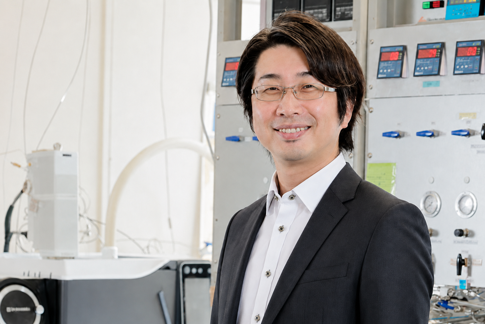
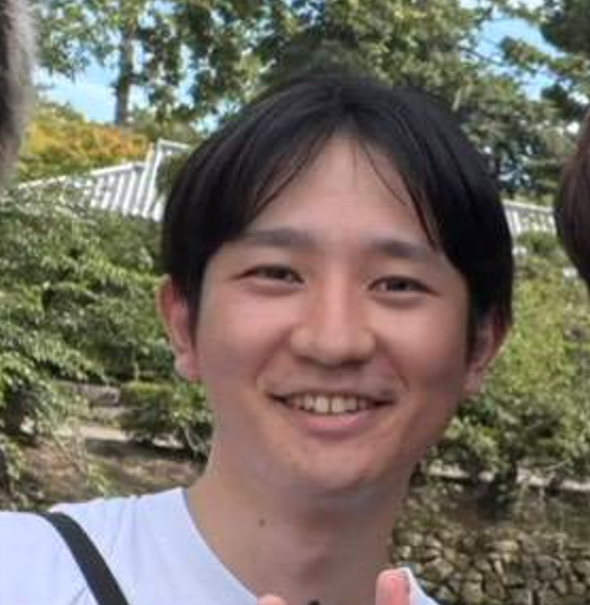
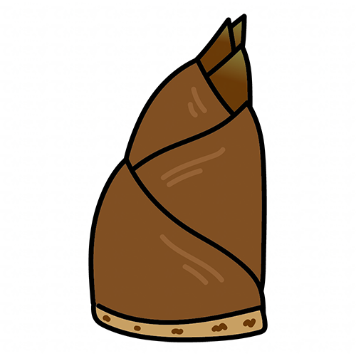
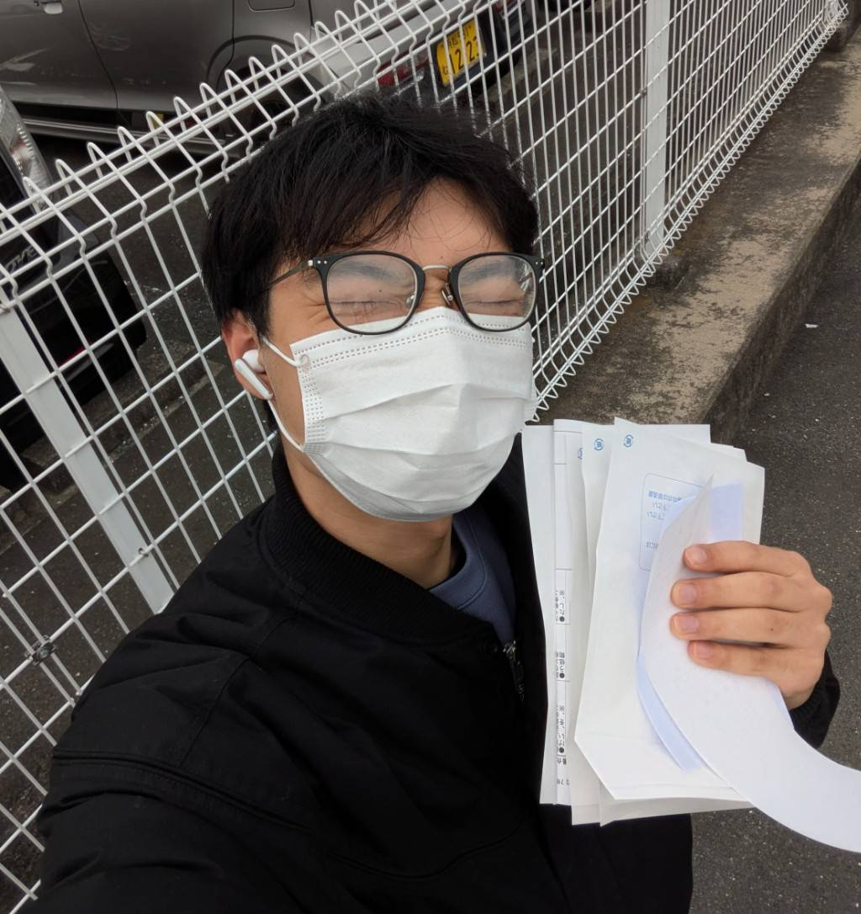
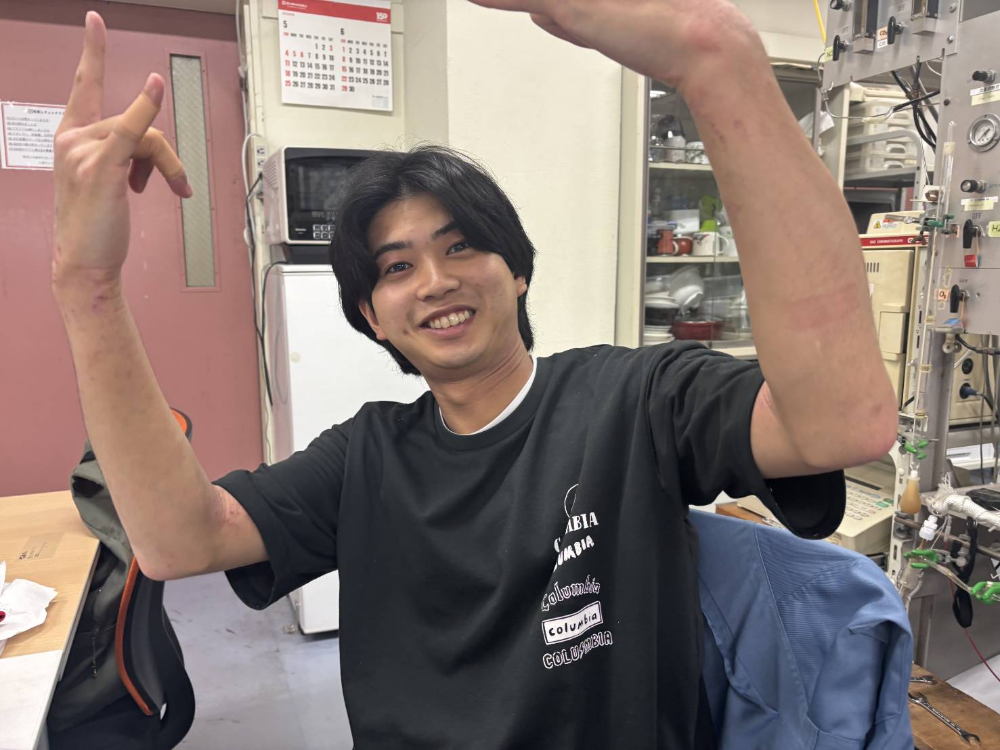
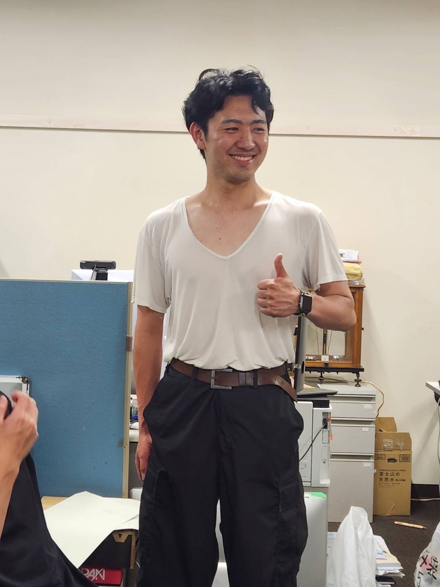
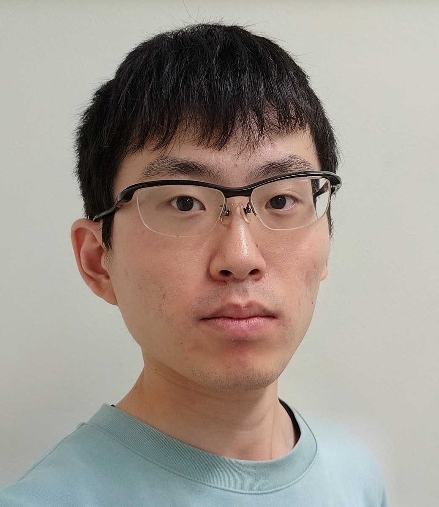
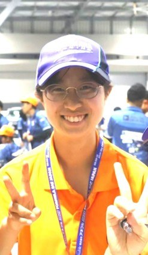
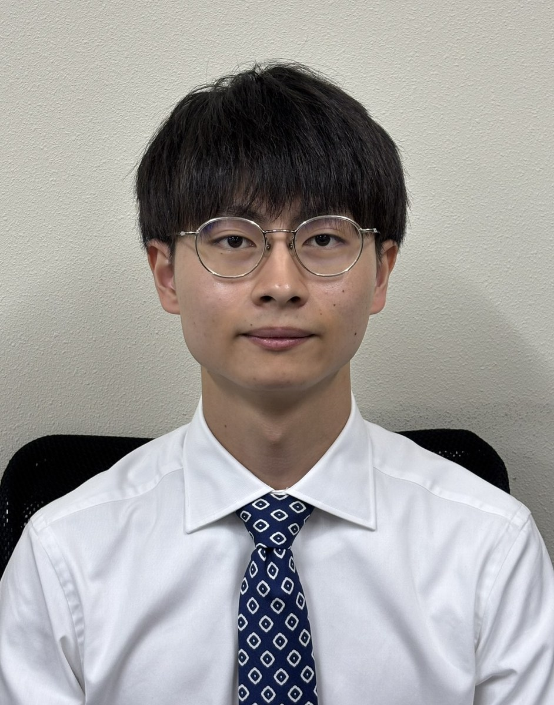
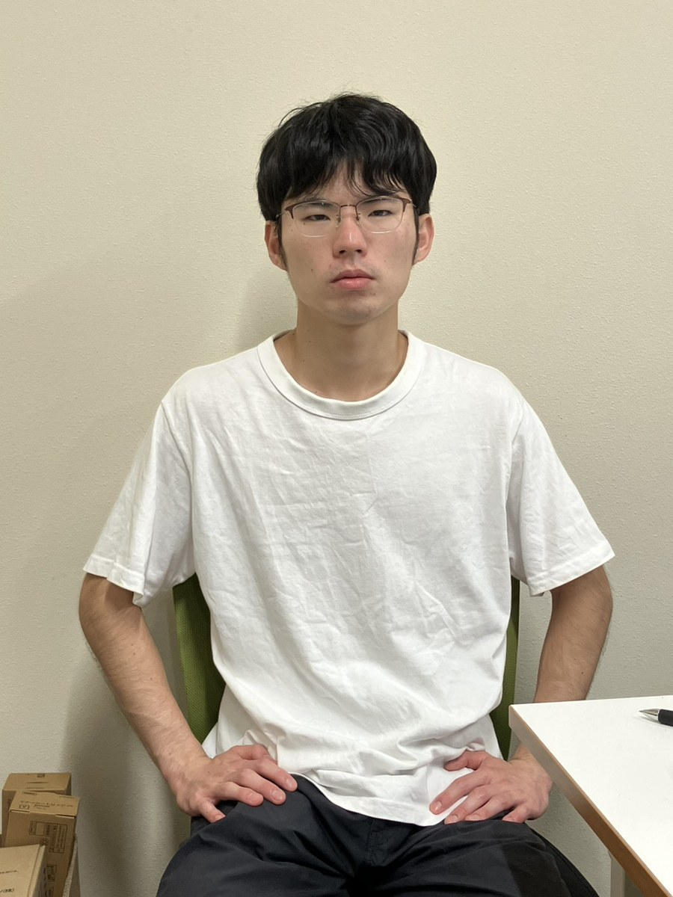

WATANABE LABORATORY / PEOPLE
People
make research.
専門の違いを越えて、触媒・反応工学・構造体・炭素循環を一つの研究室でつなぎます。
01 / PRINCIPAL INVESTIGATOR

PROFESSOR
渡部 綾 Ryo Watanabe
静岡大学 学術院工学領域 化学バイオ工学系列 教授
研究分野：触媒化学・反応工学、触媒プロセス、資源化学プロセス。構造体触媒、CO₂変換、電化反応、格子硫黄を利用したレドックス触媒プロセスを研究しています。
早稲田大学・関根泰研究室出身。 学部から博士課程まで応用化学を学び、関根研究室では触媒の格子酸素と水蒸気の相互作用を利用するレドックス触媒反応を研究しました。この研究経験が、現在の硫化物の格子S、CO₂変換、電化触媒プロセスへつながっています。
02 / ACADEMIC PATH
From Waseda
to Shizuoka.
応用化学と触媒研究を基礎に、レドックス触媒から構造体触媒、CO₂資源化、電化反応へ研究領域を展開してきました。
早稲田大学 理工学部 応用化学科 卒業応用化学を基礎から学び、触媒・反応工学へ研究の軸を定める。
早稲田大学大学院 理工学研究科 応用化学専攻 博士前期課程 修了触媒化学と酸化還元反応に関する研究を継続。
早稲田大学 先進理工学部 応用化学科 助手 ／ 関根 泰 研究室関根研究室にて、格子酸素と水蒸気の相互作用を利用したレドックス触媒反応を研究。
早稲田大学大学院 先進理工学研究科 応用化学専攻 博士後期課程 修了博士（工学）。博士論文は「触媒の格子酸素と水蒸気との相互作用をともなう酸化還元反応の研究」。
静岡大学 工学部 物質工学科 助教機能性複合酸化物触媒と化学反応システムを融合する研究を推進。
静岡大学 学術院工学領域 化学バイオ工学系列 准教授硫化物レドックス、構造体触媒、CO₂変換、多段反応システムへ研究を展開。
静岡大学 学術院工学領域 化学バイオ工学系列 教授触媒化学と反応工学を基盤に、炭素循環とプロセス電化を推進。
博士課程・修士課程のメンバーを学年ごとに紹介します。
D2
Doctoral Course

D2
美濃 一秀 Kazuhide Mino
- Research
- Co系構造体触媒によるエタノールの水蒸気改質反応に関する研究
- From
- 静岡県島田市
「やらない後悔より、やる後悔！」
M2
Master's Course
M2
中澤 優 Yu Nakazawa
- Research
- C1系物質から固体炭素に変換する触媒反応システムに関する研究
- From
- 愛知県
「今しかできない経験の宝庫です！一緒に頑張りましょう！!」
M2
及川 雅虎 Masatora Oikawa
- Research
- 多段式スパイラル構造体触媒システムを用いたバイオガスの直接メタン化特性
- From
- 岩手県
「珍しい名前で同名の方にお会いしたことはありませんが、最近どうやらYahoo中国語版と同名らしいことが判明しました。研究の成果をあげられるよう、テーマに対し真摯に取り組み、また、研究者としても成長できるよう努力します。」

M2
樋脇 亘志 Koshi Hiwaki
- Research
- アンモニア分解
- From
- 愛知県豊田市
「ギャンブルとお酒は懲り懲り」

M2
松野 太信 Taishin Matsuno
- Research
- 低温で逆水性ガスシフト反応を加速するCu-Fe/Znスパイラル構造体触媒に関する研究
- From
- 愛知県
「卒業目指して頑張ります」

M2
松下 岳広 Takehiro Matsushita
- Research
- 通電加熱構造体触媒を用いたCO₂メタン化反応に関する研究
- From
- 静岡県
「アットホームな研究室です」
M1
Master's Course

M1
古橋 祈梨 Inori Furuhashi
- Research
- 構造体触媒を用いた通電加熱によるメタンドライ改質の反応特性評価
- From
- 静岡県
「きのこ派です」

M1
岩橋 宙来 Sora Iwahashi
- Research
- 通電加熱式バイオエタノール改質反応についての研究
- From
- 愛知県常滑市
「きのこの山撲滅運動家」

M1
松本 和希 Kazuki Matsumoto
- Research
- C1系化合物からの固体炭素製造に関する研究
- From
- 京都府
「最近ドラマにハマってます」

M1
加藤 集 Shu Kato
- Research
- CO₂を大量固定化するカーボンルーピングシステムの開発
「目指せ炭素捕集率100%」

M1
伊澤 遼馬 Ryoma Izawa
- Research
- 構造体触媒を用いたアンモニア合成の研究
- From
- 神奈川県
「触媒も私も成長中です。よろしくお願いします。」
B4
Undergraduate

B4
西村 優花 Yuka Nishimura
- Research
- 構造体触媒反応場を用いたC1系化合物からの燃料製造特性の検討
- From
- 山梨県甲府市
「去年からONE PIECE見進めています．」

B4
秋野 寛幸 Hiroyuki Akino
- Research
- e-Dry reforming における通電形態が反応特性に及ぼす影響
- From
- 埼玉県
「ゲーム（特にLOL）が好きです。」

B4
中村 健人 Kento Nakamura
- Research
- 通電加熱式構造体触媒を用いたメタノール改質における熱・物質移動特性の解明
- From
- 岐阜県
「ひたむきに生きる」
B4
渋澤 純 Jun Shibusawa
- Research
- 合成ガスからの着臭剤の製造
- From
- 愛知県
「釣りにハマりそう」
03 / STUDENT ACHIEVEMENTS
Recent recognition
静岡大学教員データベース掲載情報から最近の学生受賞を抜粋しています。
加藤 集
化学工学会第91年会：「CO₂を大量固定化する多段式Carbon Loopingシステムの特性評価」
松本 和希
第28回化学工学会学生発表会：「Fe-Co-K触媒を用いたCOからの固体C製造におけるCo含有量の影響」
中澤 優
化学工学会第91年会：「Co, K添加によるFe系構造体触媒のCO変換と繊維状炭素生成の促進」